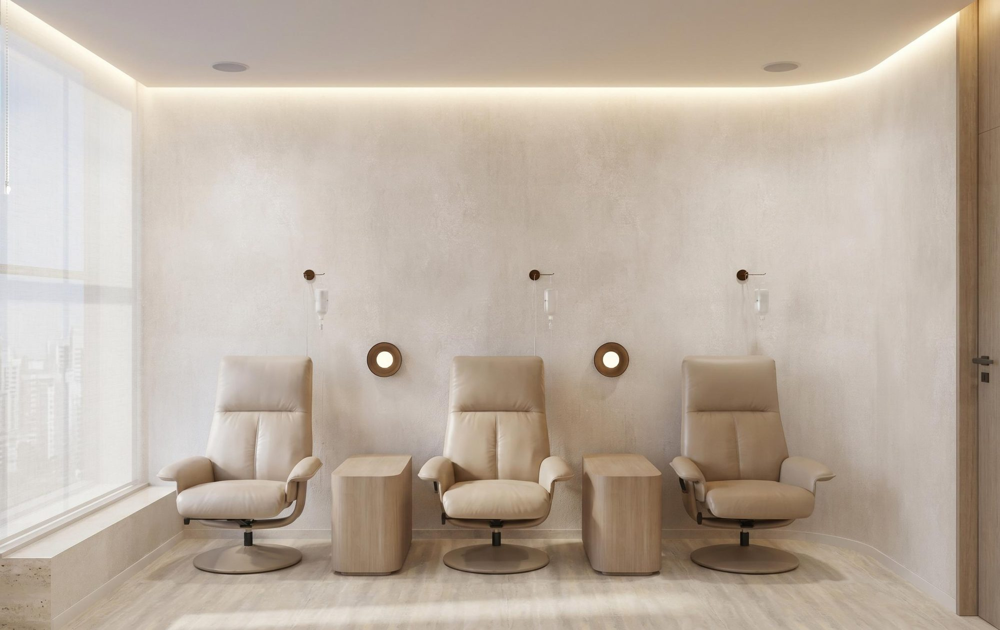
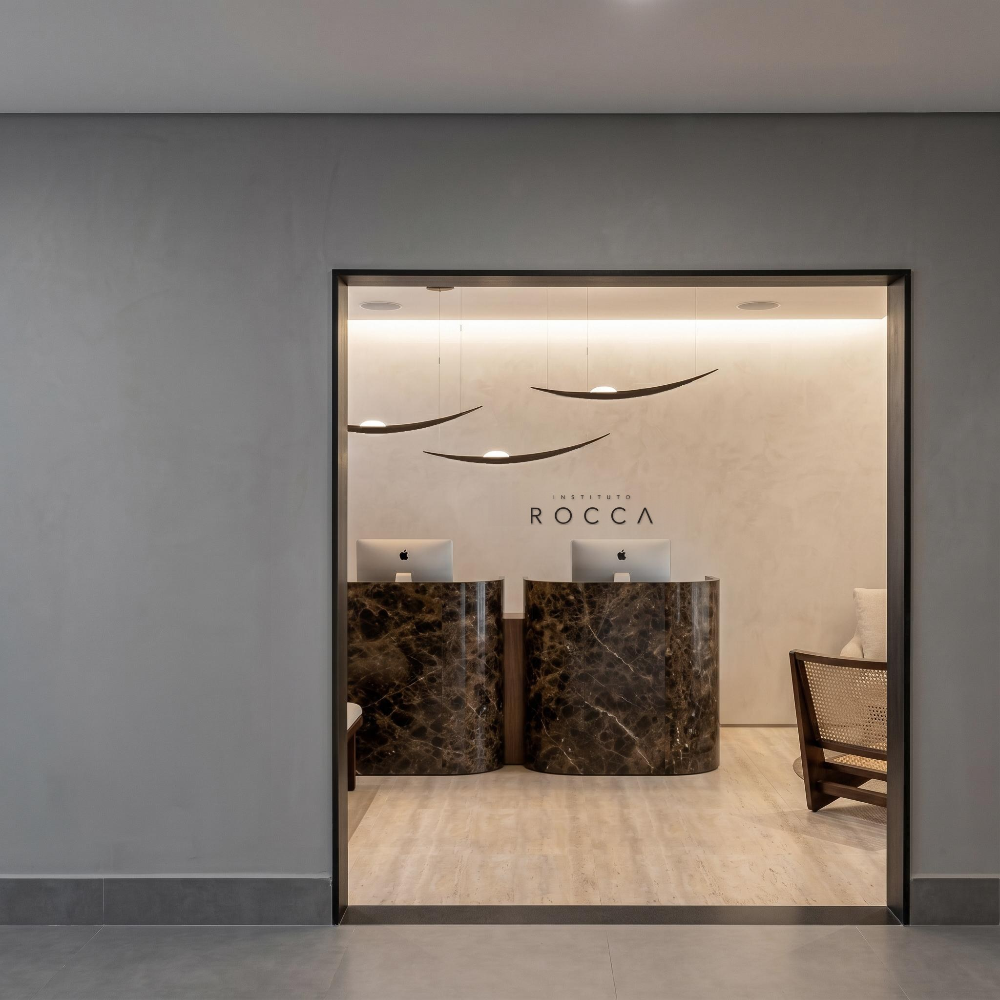

Quem eu sou — gravado no estúdio Jacarandá
Quem eu sou — gravado no estúdio Jacarandá

01 — O problema
Alguma coisa parou de funcionar. E ninguém foi olhar.
Dormir oito horas e acordar cansado. A disposição que sumiu. A barriga que não sai, mesmo fazendo o que sempre funcionou para você.
Na maior parte das vezes não é a idade. É metabólico, é hormonal, e é investigável.
02 — O método
Investigar antes de prescrever.
A consulta começa pela escuta, passa pelo exame e só então chega à conduta. Nessa ordem, sempre.
Você sai entendendo o próprio resultado, sem jargão, e sabendo por que cada coisa foi pedida — com o médico que vai te acompanhar o tratamento inteiro.
Serviços
Cinco serviços. O mesmo jeito de conduzir.
-
 Emagrecimento e metabolismo Emagrecer sem reganhar depois.
Emagrecimento e metabolismo Emagrecer sem reganhar depois. -
 Avaliação hormonal Todo mundo sabe que a mulher precisa avaliar. O homem também.
Avaliação hormonal Todo mundo sabe que a mulher precisa avaliar. O homem também. -
 Qualidade de vida e longevidade O que volta primeiro: energia, sono e disposição.
Qualidade de vida e longevidade O que volta primeiro: energia, sono e disposição. -
 Dermatologia Pele boa começa antes do procedimento.
Dermatologia Pele boa começa antes do procedimento. -

Lipedema Não é 'só gordura'.
03 — O mecanismo
Você já esteve melhor. O que mudou não foi você.

Foi o seu metabolismo. Quando ele desregula, energia, sono, disposição e peso vão junto.
Metabolismo se investiga e se trata. E o que volta é o que sumiu: não uma pessoa nova, a sua melhor versão.

A casa
A casa, em Moema.


Os médicos
Três médicos, uma casa.
Aqui você não passa por um médico. Você tem um médico — o mesmo, do primeiro dia em diante.
Quem eu sou — gravado no estúdio Jacarandá
 Quem eu sou — gravado no estúdio Jacarandá
Quem eu sou — gravado no estúdio Jacarandá
Dr. Breno Gondim
CRM-SP 000000 [PENDENTE] Conheça o médico Quem eu sou — gravado no estúdio Jacarandá
Quem eu sou — gravado no estúdio Jacarandá
Dra. Ana Paula Bovo
CRM-SP 000000 [PENDENTE] Conheça o médicoConteúdo
Perguntas que a gente responde toda semana.
Com nome e rosto. Gravadas no estúdio Jacarandá, transcritas no site.
-
Ver resposta
Dormir bem e acordar cansado: o que pode estar por trás?
— Dr. Breno Gondim -
Ver resposta
Exame de sangue normal, mas o corpo não está bem: o que pode estar acontecendo?
— Dr. Túlio Bovo -
Ver resposta
Quando o botox não é indicado?
— Dra. Ana Paula Bovo
Avaliação com o médico que vai acompanhar você.
Quem responde é o Instituto. Você conta o que parou de funcionar e a avaliação é marcada na conversa, em até um dia útil.